This practice exam covers scientific method and renewable energy and waves, sound and light. The original paper also had astronomy questions, which are not in the current course, so they have been left out (multiple-choice Questions 27–38 and short-answer Questions 8–10). Marks for the multiple-choice questions are 1 each.
Section A: Multiple choice
The scientific approach and renewable energy
Questions 1–4. A group of students wanted to know which materials moved fastest down a 2 m plane inclined at 45°. They recorded these results.
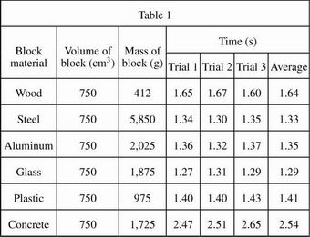
What type of data is time in this example?
What is the dependent variable in this experiment?
The students want to plot their results on a scatter graph. Which is the best choice of variables for the axes?
What would be an appropriate type of graph to show the relationship between material and time?
The first step in the scientific method is to:
A well-tested explanation for a wide range of observations or experimental results is a:
Which is an inference?
The accepted value for a quantity is 15.63. A student's four measurements were 12.88, 12.92, 12.87 and 12.90. Which describes this data?
Students measuring the boiling points of various liquids find that every temperature they record is 10 degrees higher than the accepted value. This is most likely due to:
Which of the following is not a greenhouse gas?
What is the largest source of carbon dioxide emissions?
PV (solar) cells produce ______ current, which must be converted using an ______ before being exported to the grid.
The greenhouse effect is the process whereby some of the ______ emitted by the Earth's surface is "trapped" by greenhouse gases.
Energy costs $0.10 per kWh to import and earns $0.09 per kWh to export. What happens if a homeowner has 400 kW of demand and 300 kW of solar production for 8 hours?
The shortfall is 400 − 300 = 100 kW for 8 h = 800 kWh, imported at $0.10 = $80 to pay.
The components of a solar energy system, from smallest to largest, are:
Waves, sound and light
Questions 16 and 17. Waves may be described as: I. mechanical; II. non-mechanical; III. transverse; IV. longitudinal; V. electromagnetic.
Which contains all the correct descriptions of sound waves?
Which contains all the correct descriptions of light waves?
Alison sits at the end of a pier watching waves pass at a rate of 3 waves every second. The distance between neighbouring crests is 1.5 m. What is the speed of the waves?
v = fλ = 3 × 1.5 = 4.5 m/s.
The amplitude of a wave can describe all of the following except:
Virgil estimates the distance between his feet and the feet of his image in a large plane mirror is 8 m. How far must he walk away from the mirror for this distance to increase to 16 m?
The image is as far behind the mirror as Virgil is in front, so at first he is 4 m from the mirror. For a 16 m gap he must be 8 m from the mirror, so he walks 4 m further away (the gap grows by 2 m for every 1 m he walks).
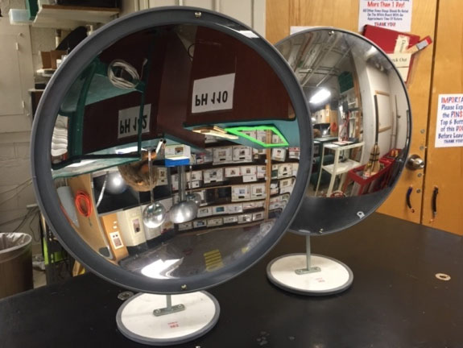
Match the curved mirrors to the correct characteristics (concave mirror; convex mirror).
When a light beam passes from air into glass, how do its speed and direction (relative to the normal) change?
Question 23. Four lenses, A to D:
A
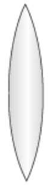
B
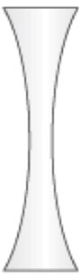
C
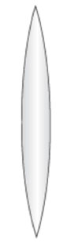
D
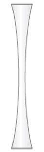
Which is a concave lens with the shorter focal length?
Concave lenses are thinner in the middle (B and D). The more strongly curved one (B) bends light more, so it has the shorter focal length.
All of the following optical effects can be explained by the refraction of light except:
Lateral inversion (left–right reversal) is caused by reflection in a mirror.
Which secondary colour is produced by adding red light and blue light?
A hot pizza box has a red and green cover. When it is viewed through magenta-tinted glasses, which best explains the result?
Section B: Short answer
The scientific approach and renewable energy
Question 1 (6 marks)
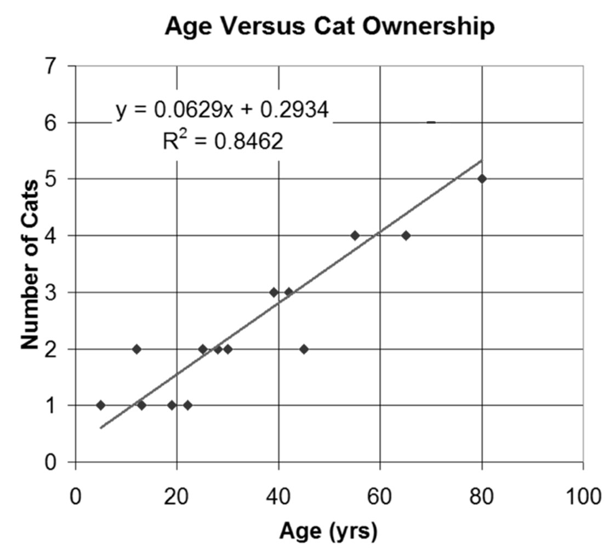
The correlation between number of cats and age is and .
Use the equation of the linear trendline to estimate the average number of cats owned by a 50-year-old person, to 2 significant figures.
y = 0.0629 × 50 + 0.2934 = 3.44, so 3.4 cats (2 significant figures).
Use the graph to estimate the age of a person with 6 cats.
Extend the trendline up to 6 cats and read down to the age axis: about 87–90 years. (Using the equation: (6 − 0.29) ÷ 0.0629 = 91.)
Which of the two estimates (b or c) is more reliable? Explain.
The estimate in b (1 mark), because it uses interpolation (50 years is within the range of the data), whereas c uses extrapolation beyond the data (1 mark).
Question 2 (7 marks)
Some genetically identical bean seedlings were divided into two groups, A and B, and planted in identical soil and pots. Group A was treated with 1% gibberellic acid (a plant hormone); group B was not. Both groups received the same sunlight and water. The average height of each group was recorded over five days.
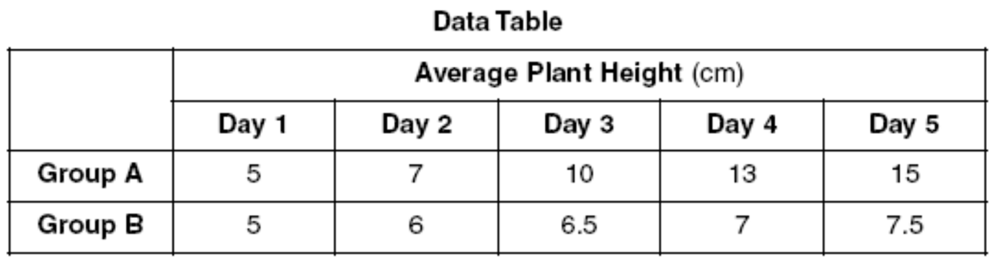
Write a hypothesis for this experiment.
If the plants are treated with gibberellic acid (1%), then they will grow taller than those that are not treated.
IV:
DV:
List two control variables for this experiment.
Any two: the type of plant; the amount of water applied; the fertiliser applied; the amount of sunlight; the soil and pot type.
On graph paper, plot the data for both groups, with a reasonable scale on each axis and a key. Describe your graph, then compare.
Day on the x-axis (1 to 5) and average plant height (cm) on the y-axis, with an even scale, e.g. 0 to 16 cm in steps of 2 (1 mark). Group A's points rise steeply, from 5 to 15 cm (1 mark); group B's points rise slowly, from 5 to 7.5 cm, each group using its own symbol from the key (1 mark).
State a valid conclusion about the effect of gibberellic acid on bean plant growth.
The hypothesis is supported: treatment with gibberellic acid has a positive effect on the height (growth) of bean plants.
List four likely environmental consequences of global warming.
Any four, e.g. rising sea levels; warmer oceans; more severe storms; altered rainfall patterns; melting polar ice and glaciers; coral bleaching; more frequent bushfires and heatwaves.
Waves, sound and light
Question 4 (4 marks)
A slinky is attached to an oscillator, which generates the waves shown. A ruler behind the slinky gives the scale.
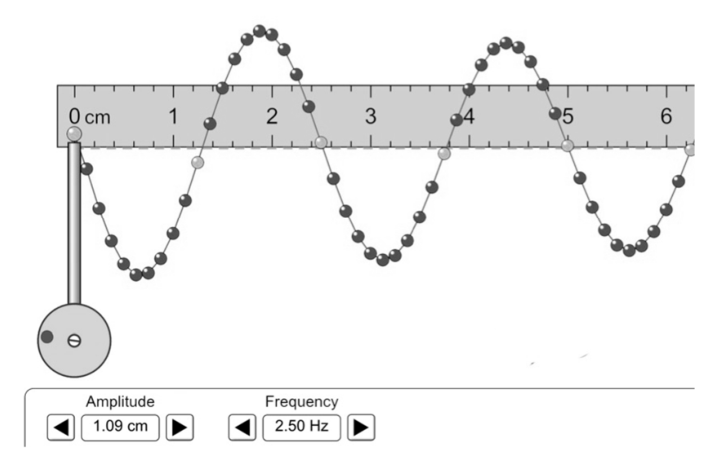
Estimate the wavelength of the waves.
Measure between neighbouring crests on the ruler.
State the frequency of the waves.
Calculate the speed of the wave in the slinky.
v = fλ = 2.5 × 2.5 = 6.25 cm/s.
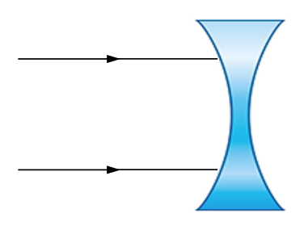
On paper, (a) draw the paths of the two rays through the concave lens, including inside the lens, and (b) find and label the virtual focus, showing how you located it. Describe them, then compare.
(a) Each ray bends slightly as it enters the lens and again as it leaves, so the rays leave spreading apart (diverging): the top ray heads up and the bottom ray heads down (2 marks).
(b) Extend the two outgoing rays backwards with dashed lines; they meet on the principal axis on the left (incoming) side of the lens. Label this point F′, the virtual focus (2 marks).
Question 6 (3 marks)
A light beam from a source in air is directed at a rectangular block of polycarbonate. A rectangular glass block is placed right next to it.
| Material | Speed of light (m/s) | Index of refraction |
|---|---|---|
| Air | 3 × 108 | 1 |
| Polycarbonate | 1.9 × 108 | 1.6 |
| Glass | 2 × 108 | 1.5 |
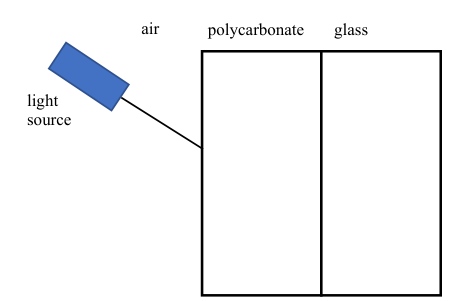
- Entering the polycarbonate from air, the beam and bends the normal.
- Passing from the polycarbonate into the glass, the beam slightly and bends the normal.
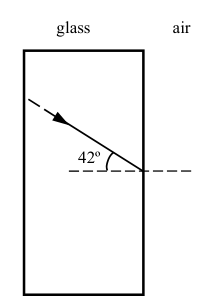
In another experiment, a light beam in glass meets the glass–air boundary with an angle of incidence of 42°, which equals the critical angle of glass. The beam refracts at ° to the normal, so it travels .